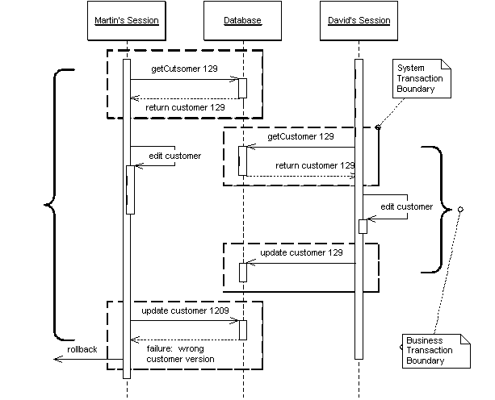

| Home | Articles | Talks | Links | Contact Me | ISA | ThoughtWorks |
by David Rice
Prevent conflicts between concurrent business transactions, by detecting a conflict and rolling back the transaction.

Often a business transaction executes across a series of system transactions. Once outside the confines of a single system transaction, we cannot depend upon our database manager alone to ensure that the business transaction will leave the record data in a consistent state. Data integrity is at risk once two sessions begin to work on the same records. With two sessions editing the same data lost updates are quite possible. With one session editing data that another is reading an inconsistent read becomes likely.
Optimistic Offline Lock solves this problem by validating that the changes about to be committed by one session don't conflict with the changes of another session. A successful pre-commit validation is, in a sense, obtaining a lock indicating it's OK to go ahead with the changes to the record data. So long as the validation and the updates to the record data occur within a single system transaction the business transaction will display consistency.
Whereas Pessimistic Offline Lock assumes that the chance of session conflict is high and therefore limits the system's concurrency, Optimistic Offline Lock assumes that the chance of conflict is rather low. The expectation that session conflict isn't likely allows multiple users to work with the same data at the same time.
An Optimistic Offline Lock is obtained by validating that in the time since a session loaded a record another session has not altered that record. An Optimistic Offline Lock can be acquired at any time but is valid only during the system transaction in which it is obtained. So in order that a business transaction not corrupt record data it must acquire an Optimistic Offline Lock for each member of its change set during the system transaction in which it applies changes to the database.
The most common implementation is to associate a version number to each record in your system. When a record is loaded that version number is maintained by the session along with all other session state. Getting the Optimistic Offline Lock is a matter of comparing the version stored in your session data to the current version in the record data. Once the verification succeeds, all changes, including an increment of the version, can be committed. The version increment is what prevents inconsistent record data. A session with an old version cannot acquire the lock.
With an RDBMS data store the verification is a matter of adding the version number to the criteria of any SQL statements used to update or delete a record. A single SQL statement can both acquire the lock and update the record data. The final step is for the business transaction to inspect the row count returned by the SQL execution. A row count of 1 indicates success. A row count of 0 indicates that the record has been changed or deleted. With a row count of 0 the business transaction must rollback the system transaction to prevent any changes from entering the record data. At this point the business transaction must either abort or attempt to resolve the conflict and retry.

Figure 1: UPDATE Optimistic Check
In addition to a version number for each record, storing information as to who last modified a record and when can be quite useful when managing concurrency conflicts. When informing a user of a failed update due to a concurrency violation a proper application will provide a message as to who altered the record in question and when. Note that it is a bad idea to use the modification timestamp rather than a version count for your optimistic checks. System clocks are simply too unreliable. Even more so if you are coordinating across multiple servers.
An alternative implementation that sometimes comes up is for the where clause in the update to include every field in the row. The advantage of this is that you can use this without using some form of version field, which can be handy if you can't alter the database tables to add a version field. The problem is that this complicates the update statement with a potentially rather large where clause. This may also be a performance impact, although this depends on how clever the database is about using the primary key index.
Often, implementation of Optimistic Offline Lock is left at including the version in UPDATE and DELETE statements. This fails to address the problem of an inconsistent read. Suppose a billing system that creates charges and calculates appropriate sales tax. A session creates the charge and then looks up the customer's address to calculate the tax on that charge. But while the charge generation session is in progress a separate customer maintenance session edits the customer's address. As local tax rates are dependent upon location the tax rate calculated by the charge generation session might be invalid. But since the charge generation session did not make any changes to the address the conflict will not be detected.
There is no reason why Optimistic Offline Lock cannot be used to detect an inconsistent read. In the example above the charge generation session needs to recognize that its correctness is dependent upon the value of the customer's address. The session should perform a version check on the address as well. This could be done by adding the address to your change set or maintaining a separate list of items on which to perform a version check. The later requires a bit more work to setup but results in code that more clearly states its intent. If you are checking for a consistent read simply by re-reading the version rather than an artificial update be especially aware of your system transaction isolation level. The version re-read will only work with repeatable read or stronger isolation. Anything weaker requires an increment of the version.
A version check might be overkill for certain inconsistent read problems. Often a transaction will be dependent only upon the presence of a record or maybe the value of only one of its fields. In such a case it may improve your system's liveness to check these types of conditions rather than the version, as fewer concurrent updates will result in the failure of competing business transactions. The better you understand your concurrency issues the better you can manage them in your code.
The Coarse-Grained Lock can help with certain inconsistent read conundrums by treating a group of objects as a single lockable item. A final option is to simply execute all of the steps of the problematic business within a long running transaction. The ease of implementation might prove worth the resource hit of using a few long transactions here and there.
Where detection of an inconsistent read gets a bit difficult is when your transaction is dependent upon the results of a dynamic query rather than the reading of specific records. Its possible that you could save the initial results and compare them to the results of the same query at commit time as a means of obtaining an Optimistic Offline Lock.
As with all locking schemes Optimistic Offline Lock by itself does not provide adequate solutions for some of the trickier concurrency and temporal issues in a business application. We cannot stress enough that in a business application concurrency management is as much a domain issue as it is a technical one. Is the customer address scenario above really a conflict? It might be OK that I calculated the sales tax with an older version of the customer. Which version should I actually be using? This is a business issue. Or consider a collection. What if two sessions simultaneously add items to a collection. The typical Optimistic Offline Lock scheme will not prevent this. But this might very well be a violation of business rules.
A system using Optimistic Offline Lock that we all should be familiar with is a source code management system. When an SCM system detects a conflict between programmers it usually can figure out the correct merge and retry the commit. A quality merge strategy makes the use of Optimistic Offline Lock very powerful. Not only is the system's concurrency quite high but users rarely have to redo any work. Of course, the big difference between an SCM system and an enterprise business application is that an SCM system must implement only one type of merge while an enterprise business system might have hundreds of merges to implement. Some might be of such complexity that they are not worth the cost of coding. Others might be of such value to the business that the merge should by all means be coded. Despite rarely being done the merging of business objects is quite possible. Merging business data is a pattern unto its own so I will leave it at that rather than butcher the topic, but do understand the power that it adds to using the Optimistic Offline Lock.
Optimistic Offline Lock only lets us know if a business transaction will commit during the last system transaction but it's occasionally useful to know earlier on if a conflict has occurred. To do this you can provide a checkCurrent method that looks to see if anyone else has updated the data. Such a check is not a guarantee that you won't get a conflict, but it may be worthwhile to stop a complicated process if you can tell in advance that it certainly won't commit
Optimistic concurrency management is appropriate when the chance of conflict between any two business transactions in a system is low. If conflicts are likely it is not user-friendly to announce a conflict only when the user has finished his work and is ready to commit. Eventually the user will assume the failure of business transactions and stop using the system. Pessimistic Offline Lock is more appropriate when the chance of conflict is high or the expense of a conflict is unacceptable.
As optimistic locking is much easier to implement and not prone to the same defects and runtime errors as a Pessimistic Offline Lock, consider using it as the default approach to business transaction conflict management in any system you build. Where needed, Pessimistic Offline Lock works well as a complement to Optimistic Offline Lock. So rather than asking when to use an optimistic approach to conflict avoidance, ask when is the optimistic approach alone is not good enough. The correct approach to concurrency management will maximize concurrent access to data while minimizing the number of conflicts.
 |  |